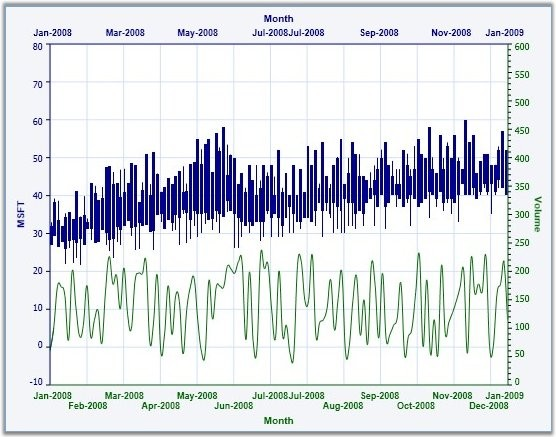

Chart is capable of rendering multiple axes in the same plot. Different series can be plotted against different axes as shown below.
|
[XAML]
<sfchart:Chart Name="Chart1"> <sfchart:ChartArea> <!--This series is plotted against the default Y axis --> <sfchart:ChartSeries Type="Spline" x:Name="Series1" DataSource="{Binding Source={StaticResource dataval}}" BindingPathX="ID" BindingPathsY="Val3" IsIndexed="False" Label="Avg Temperature"> </sfchart:ChartSeries> <!--This series is plotted against a custom Y axis --> <sfchart:ChartSeries Type="SplineArea" x:Name="Series2" DataSource="{Binding Source={StaticResource dataval}}" BindingPathX="ID" BindingPathsY="Val1" Label="Avg Rainfall"> <sfchart:ChartSeries.YAxis> <sfchart:ChartAxis OpposedPosition="True" RangePadding="Normal" IsAutoSetRange="False" Range="0,100" SmallTicksPerInterval="0" Interval="10" Orientation="Vertical"> <sfchart:ChartArea.ShowGridLines>false</sfchart:ChartArea.ShowGridLines> <sfchart:ChartAxis.Header> <TextBlock Text="Rainfall (mm)" FontFamily="Tahoma" FontSize="14" Foreground="LightSteelBlue"/> </sfchart:ChartAxis.Header> </sfchart:ChartAxis> </sfchart:ChartSeries.YAxis> </sfchart:ChartSeries> </sfchart:ChartArea> </sfchart:Chart> |

Figure 192: Chart with Multiple Chart Axes
For more details, refer to the sample in the following location:
...\My Documents\Syncfusion\EssentialStudio\<Version Number>\WPF\Chart.WPF\Samples\3.5\WindowsSamples\Chart Axis\Chart Multiple Opposed Axes Demo
See Also
Chart Axis Orientation, Inverted Axis, Opposed Axis, Logarithmic Axis